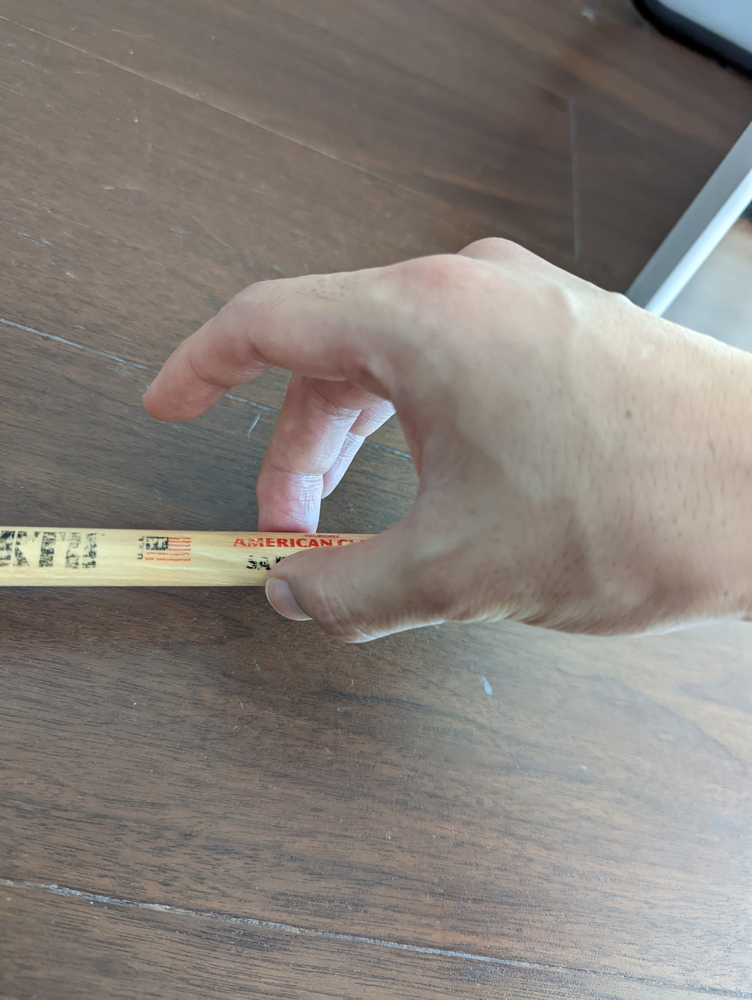

Play three different sounds depending on how you hold the stick
Keita memo: Students learn that the way they hold the stick changes the sound. I will try to show three ways of holding sticks and how the sounds will change via texts, videos, photos, and spectrum analyzer (one way to visual the differnces of pitch).
Examples
Low pitch
(If the contact area between the stick and your hand is small, the stick will tremble and make a low pitch sound.)
How to hold the stick
Add more texts to explain.
Spectrum
Showing the large amplitude in lower frequency.

Middle pitch
(If the contact area between the stick and your hand is medium (not too small but not tii large, it will make a pitch between low and high.)
How to hold the stick
Add more texts to explain.
Spectrum
Showing relatively flat amplitude in every frequency.
High pitch
(If the contact area between the stick and your hand is large, it will make a high pitch sound.)
How to hold the stick
Add more texts to explain.
Spectrum
Showing the large amplitude in higher frequency.
Practice
Keita memo: Students can try by themselves with spectrum analyzer. But I have to explain what the spectrum analyzer is...
Showing the range between 220Hz (left) to 2200Hz (right).